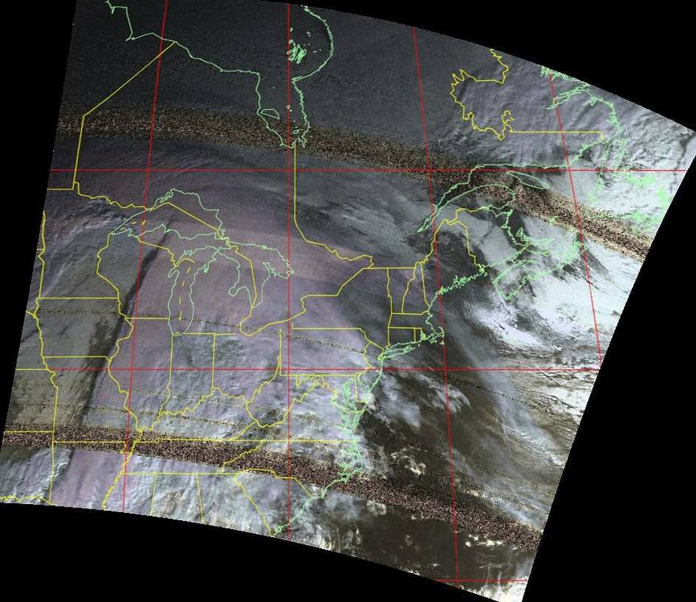

Satellite Images
Some time ago, I discovered that NOAA weather satellites broadcast images that anyone can pick up with some simple radio equipment. Using a simple USB software defined radio, a home-built antenna, and some decoding software, I successfully received several live images from NOAA satellites right overhead.
